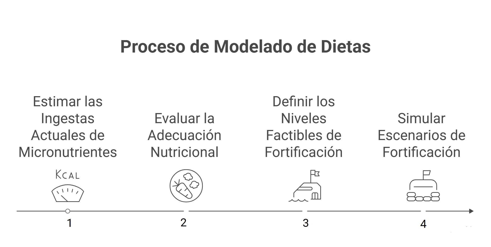
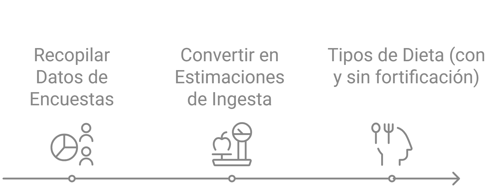

Módulo 14
Integración del Marco metodológico integral para el diseño y evaluación de políticas de fortificación de alimentos
Sumario
Generalidades
Modelaje de dietas y estimación de ingesta de micronutrientes
Métodos de evaluación de ingesta vs requerimientos
Determinación de niveles factibles de fortificación (FFL)
Generalidades
El modelaje de dietas es la herramienta clave para estimar la ingesta de micronutrientes en una población, tanto a partir de la dieta habitual (alimentos sin fortificar) como considerando los alimentos fortificados. Con esos datos se pueden aplicar métodos de evaluación nutricional y diseñar escenarios de fortificación para guiar políticas públicas.
El proceso se basa en cuatro pasos articulados:

- Estimar las ingestas actuales de micronutrientes (dieta habitual, sin fortificación o con la existente).
- Evaluar la adecuación nutricional usando métodos estadísticos (EAR cut-point y enfoque de probabilidades).
- Definir los niveles factibles de fortificación (FFL) según lineamientos de la OMS, para garantizar seguridad y eficacia.
- Simular escenarios de fortificación comparando diferentes configuraciones (actuales vs optimizadas) y calcular su impacto.
Modelaje de dietas y estimación de ingesta de micronutrientes
Se parte de encuestas nacionales (consumo individual o encuestas de gasto de hogares).
Se convierten en estimaciones de ingesta de energía y micronutrientes.
Se diferencian dos tipos de dieta:
Habitual sin fortificación: línea de base.
Con alimentos fortificados: permite simular impacto de fortificación existente o de nuevos escenarios.

👉 Aquí es donde entran los métodos de evaluación de adecuación.
Métodos de evaluación de ingesta vs requerimientos
a) Método del punto de corte de la EAR
- Uso práctico: estimar rápidamente la prevalencia de deficiencia comparando la distribución de ingestas con la EAR.
- Consideraciones avanzadas: útil en la mayoría de micronutrientes excepto en aquellos con requerimientos altamente asimétricos (ej. hierro en mujeres).
b) Método de enfoque completo de probabilidades
- Uso práctico: estima la probabilidad de inadecuación en cada individuo y la promedia en el grupo.
- Consideraciones avanzadas: más preciso en micronutrientes problemáticos; también útil para balancear riesgos de deficiencia vs exceso al modelar fortificación.
👉 Ambos métodos son complementarios: el primero es exploratorio y rápido, el segundo más robusto para decisiones de política.
Determinación de niveles factibles de fortificación (FFL)
La OMS y FAO recomiendan establecer niveles de adición de nutrientes que sean eficaces, seguros y factibles.
El FFL se define considerando:
Consumo habitual del vehículo de fortificación.
Distribución de requerimientos y de ingestas.
Riesgo de ingestas excesivas en subgrupos con bajo requerimiento.
Sirve como límite técnico y de seguridad para el cálculo de las adiciones.
Cálculo de adiciones de micronutrientes usando EAR y FFL
El EAR actúa como referencia del requerimiento poblacional mínimo que se busca cubrir.
El FFL actúa como límite superior seguro de adición.
El cálculo consiste en encontrar un nivel de fortificación que:
Reduzca la prevalencia de deficiencia (ingestas < EAR).
No aumente de manera significativa la prevalencia de exceso (ingestas > UL, nivel superior tolerable).
Aquí el enfoque probabilístico es especialmente útil porque permite modelar riesgos duales (deficiencia + exceso).
Construcción de escenarios de fortificación
Se comparan varios escenarios aplicando los métodos anteriores:
- Base (sin fortificación) → refleja la prevalencia actual de deficiencia.
- Fortificación actual → muestra el impacto de las políticas vigentes.
- Fortificación optimizada o nuevos vehículos → simula ajustes en niveles de adición o elección de otros alimentos con mayor cobertura.
En cada escenario se evalúa:
- Prevalencia de deficiencia.
- Riesgo de exceso.
- Impacto diferencial por grupo poblacional (niños, mujeres, adultos).
Síntesis
- El modelaje de dietas es la base de todo (proporciona las ingestas).
- Los métodos EAR cut-point y probabilístico son las herramientas para traducir esas ingestas en indicadores de adecuación.
- El FFL (OMS) proporciona un marco normativo para no sobrefortificar.
- El cálculo de adiciones con EAR + FFL permite encontrar el “punto óptimo” de fortificación.
- Los escenarios de fortificación permiten probar diferentes configuraciones y seleccionar la más costo-efectiva y segura.
👉 En otras palabras: el modelaje de dietas genera la base de datos → los métodos de evaluación (EAR y probabilístico) convierten esa base en información sobre deficiencia/exceso → el FFL y el EAR se usan como referencias normativas para definir adiciones → y los escenarios de fortificación son la herramienta práctica para comparar opciones de política.
Biblografía
Rowe LA, Darwa R, Chadha M, Arabi M. A blueprint for the design and implementation of large-scale food fortification programs.
Government of Canada SC. Archived - Survey of Household Spending, 2023 [Internet]. 2023 [citado 29 de junio de 2025]. Disponible en: https://www.statcan.gc.ca/en/statistical-programs/instrument/3508_Q1_V21
Beal T, Massiot E, Arsenault JE, Smith MR, Hijmans RJ. Global trends in dietary micronutrient supplies and estimated prevalence of inadequate intakes. Bermano G, editor. PLoS ONE [Internet]. 11 de abril de 2017 [citado 3 de septiembre de 2025];12(4):e0175554. Disponible en: https://dx.plos.org/10.1371/journal.pone.0175554
RENC. Herramientas para planificar y medir el consumo en intervenciones nutricionales: fortificación de alimentos .- Actualidad .- Revista Española de Nutrición Comunitaria [Internet]. [citado 22 de agosto de 2025]. Disponible en: https://www.renc.es/actualidad2.asp?cod=47&pag=&codR=&v=1&buscar=&anno=